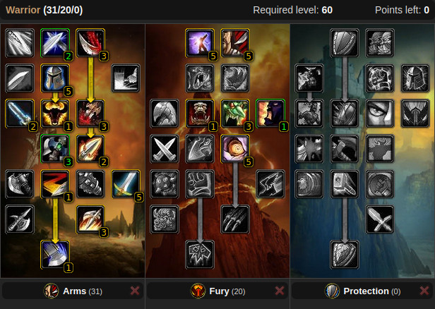
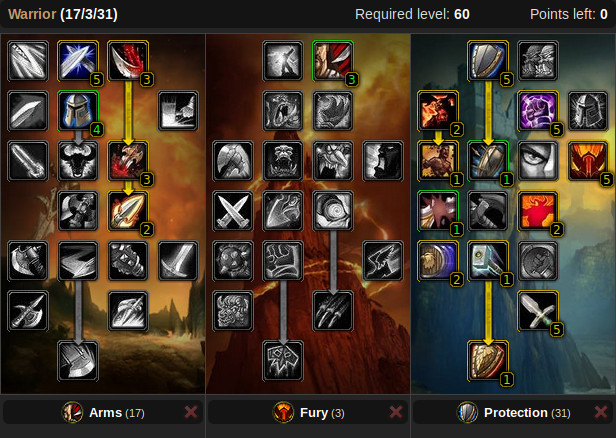
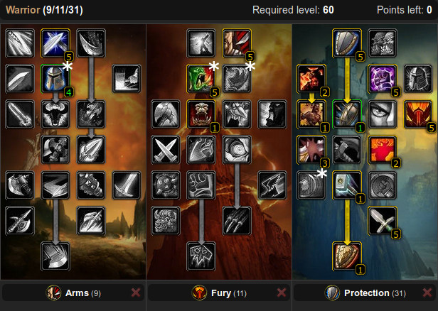
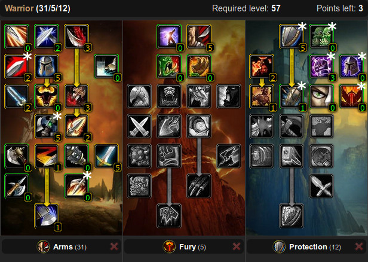
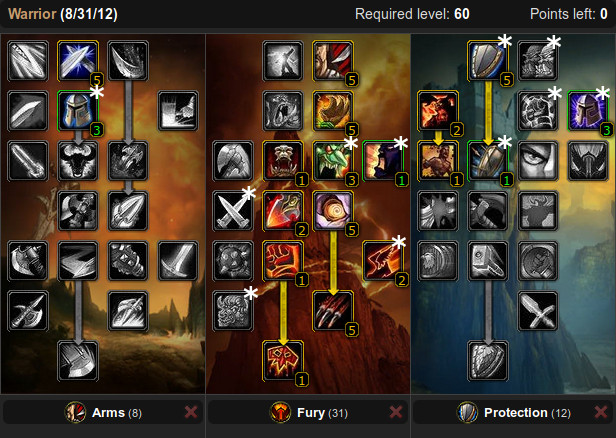
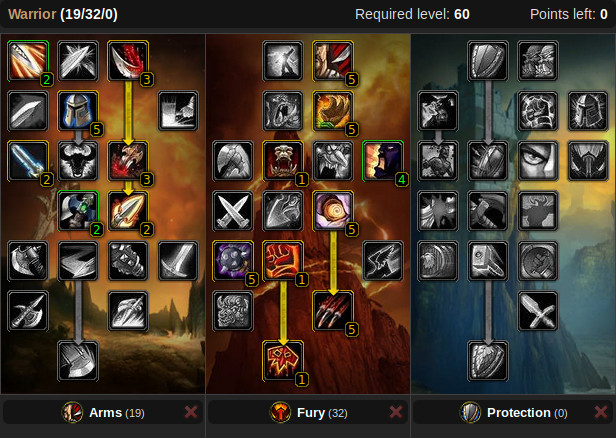

Talents
Regarding "Anger Management" (11 point Arms talent):
- I could verify the behavior: it generates 1 rage every 3 seconds, even in combat. Thus making it a very potent talent that is very worth the point once you already took 5/5 Tactical Mastery.
- The images are not yet updated, I will do this the future.
PvP
"Cookie Cutter"
- Unrivaled Arms PvP spec with Mortal Strike, Imp. Hamstring, Enrage and Piercing Howl
- Points in Blood Craze may also be put to Imp. Battle Shout
- Adjust weapon specialization as needed (Axe is good for starters, Sword proc is the best effect)
- Perfectly viable tank spec for all dungeon content
Fury PvP
- Fury with Imp. Execute, Imp. Intercept, Imp. Berserker Rage. Works with both 2H and DW
- Nice for stunning and finishing of wounded enemies, esp. in zergs
- Generally inferior to the above "Cookie Cutter" spec, due to lacking MS
- Perfectly viable tank spec for all dungeon content
Prot PvP

- Impale-boosted Shield Slam, on-demand 5s stun (Concussion Blow), increased Stun/Charm resistance (Iron Will)
- Shield Slam's chance to dispell buffs and Imp. Shield Bash are annoying for casters
- Generally inferior to the above "Cookie Cutter" spec, due to lacking MS
- Trade-offs would need to be made to also use this for PvE tanking due to lack of Defiance (threat boost)
- Imp. Sunder Armor points can also be spent elsewhere (e.g. Imp. Shield Wall or Defiance for PvE)
- Works best with block value and crit gear
PvE
DW Fury
- Bloodthirst, Impale, DW Spec, Imp. Overpower
- Do not skip Piercing Howl! It has great utility for AoE packs
- Perfectly viable tank spec for dungeon content or raid offtanks
Tank Scaffold Spec

- Key tank talents: Shield Slam, Last Stand, 1/3 Imp. Shield Block, Defiance, Tactical Mastery
- Last 10 points can be shuffled between Imp. Shield Wall, Cruelty (crit) or Anticipation (def)
- You may also take points from Tactical Mastery if you prefer to have the above talents maxed
- Great for any game stage
Impale Tank
- High threat due to Impale-boosted Shield Slam, Heroic Strike and Revenge crits
- Usually used for threat maximization at endgame gear stages (AQ40, Naxx)
Piercing Howl Tank
- Tank spec with Piercing Howl, if you Fury warriors suck
- 3 or more points of Imp. Demoralizing Shout resulted over-proportional boss damage reduction in Vanilla WoW (needs to be confirmed for WoW Classic!)
- Otherwise Imp. Demo Shout can be skipped for Unbridled Wrath
- 2 points of Tacital Mastery may be sacrificed for Imp. Shield Wall
Hybrid/Niche
Hybrid specs are generally inferior to the above specs, but might save you some respec gold if you do not want to commit to a certain playstyle.
Arms with Last Stand Scaffold
- Mortal Strike with Last Stand and Iron Will at the expense of Enrage and Piercing Howl
- Points for Imp. Shield Block, Shield Specialization, Anticipation, Toughness, Iron Will and Defiance may be shuffled in the Protection tree
- Similar, points for Imp. Charge, Imp. Hamstring and Two-Handed Weapon Specialization may be shuffled in the Arms tree
- Nice for offtanks not having proper DPS gear, but a 2H weapon
- Dungeon tanking is easier with Piercing Howl
- Last Stand sometimes helps in world PvP clutch moments
- Adjust weapon specialization as needed (Axe is good for starters, Sword proc is the best effect)
- Inferior to the above "Cookie Cutter" spec for PvP
Fury with Last Stand
- Versatile DPS, (off-)tanking and farming spec (pictured PvP variant with Blood Craze and Iron Will)
- Certain talents may be shuffled (marked with *)
- Generally inferior to the above specs with Impale (for Dmg/Threat) or Defiance (for Threat)
- Last Stand sometimes helps in world PvP clutch moments
2-hand Fury with Hamstring spam (Horde with WF support only)
- Spam Hamstring on non-Bloodthrist, non-Whirlwind GCDs to trigger Windfury procs
- Similar to Arms with Windfury, less bursty, avoids MS debuff
2-hand Fury with Imp. Slam
- Requires swing timer addon and ideally a very slow weapon
- Usually inferior to the spec above and Arms, situational
- Tauren Warriors can combine Imp. Slam with Warstomp for some nice bursts
Leveling
For leveling talents, please see the Vanilla Warrior Leveling Tips!